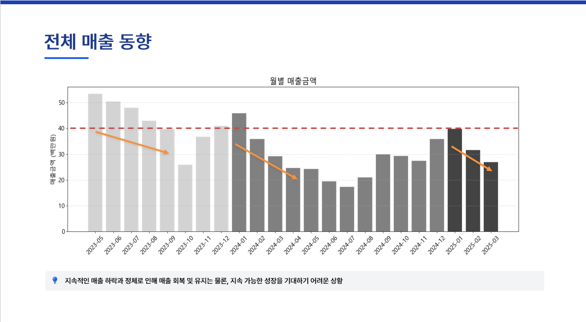
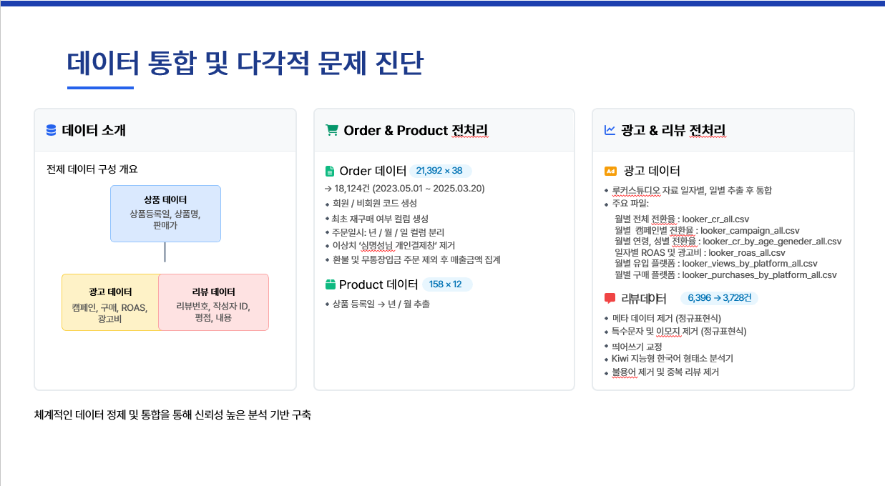
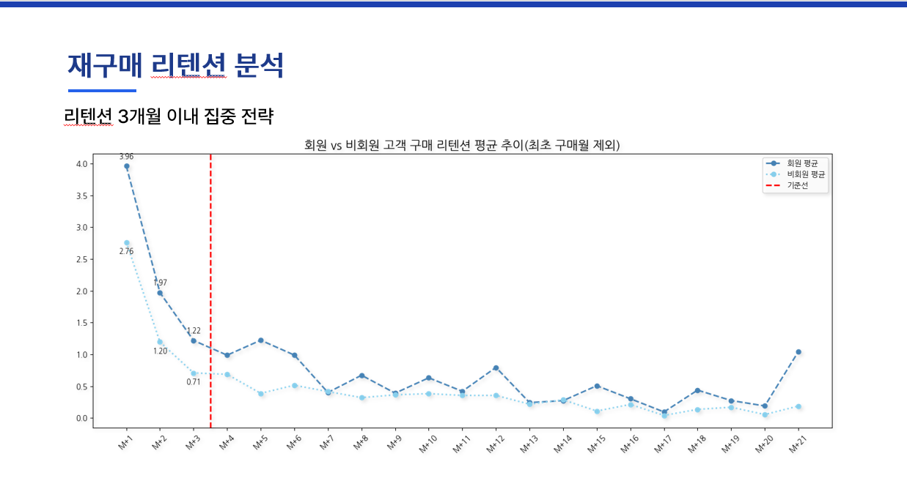

“광고! 무조건 매출과 연결되는가?”
원석 액세서리 쇼핑몰 ‘선택과 집중’ 성장 전략
프로젝트 기간: 2025.03.14 ~ 2025.03.26
광고비를 늘려도 매출은 정체될 수 있습니다.
저는 광고 의존 성장의 한계를 광고·리텐션·비회원·상품 구조로 분해하고,
‘될 놈(고객·상품)’에 집중하는 성장 전략을 설계했습니다.
핵심 메시지: 광고는 “더 집행하는 것”보다, 매출이 나는 구조(첫 구매·리텐션·상품 포트폴리오)와 함께 설계되어야 합니다.
또한 도출한 전략은 실행 아이디어에 머무르지 않도록, 비회원 상품 노출 방식·첫 구매 혜택 설계·리텐션 캠페인을 각각 실험 가능한 단위로 쪼개 검증 구조까지 함께 설계했습니다.
- 광고 효율 약화: 과거에는 광고 유입이 매출을 견인했지만, 시간이 갈수록 영향력이 약화
- 비회원 구조: 전체 고객의 69%가 비회원이며, 객단가가 회원보다 낮음
- 리텐션 골든타임: 재구매는 첫 구매 후 3개월 이내에 집중
- 전략 결론: 광고 확대보다 타겟팅·고객가치 증대·첫 구매 유도·상품 집중이 우선
1. 도입: 광고비 증가가 매출 증가를 보장하지 않는다
이커머스 업계에서는 성장을 위해 광고비를 늘리지만, 광고 단가 상승과 채널 포화로 “더 쓰는데 덜 남는” 상황이 자주 발생합니다.
짧은 사례: Warby Parker
초기에는 퍼포먼스 마케팅으로 빠르게 성장했지만,
광고 비용 상승과 고객 획득 비용 증가로 효율이 악화되며
브랜드 경험·제품 경쟁력·리텐션 중심 구조로 성장 전략을 전환한 사례로 자주 언급됩니다.
→ 광고를 더 집행하는 것보다, “광고가 먹히는 구조”를 먼저 설계해야 한다는 점에서 본 프로젝트와 맞닿아 있습니다.
리코맨즈 역시 같은 문제를 겪고 있었습니다.
- 광고비를 써도 매출 정체가 반복된다
- 광고 효율 하락의 원인을 고객 구조·상품 구조·리텐션 관점에서 설명할 필요가 있다
- 분석 결과를 실제 운영 가능한 성장 전략으로 연결해야 한다

지속적인 매출 하락과 정체는, 단순한 광고 확대만으로는 회복이 어렵다는 점을 보여줍니다.
2. 문제 정의: 광고 의존 성장의 한계를 ‘구조’로 풀어야 한다
단순히 ROAS가 떨어졌다는 사실보다 중요한 것은, 광고가 성과를 내기 어려운 구조적 원인을 파악하고 어디에 자원을 집중할지 결정하는 것입니다.
- 문제 1: 광고 유입 구매 영향력 하락
- 문제 2: 첫 구매 이후 리텐션 약화
- 문제 3: 비회원 비중은 크지만 객단가는 낮음
- 문제 4: 모든 상품을 넓게 가져가기보다, 집중할 상품 포트폴리오가 필요
결론적으로 “광고를 더 쓰는 문제”가 아니라, 누구에게, 어떤 첫 구매를 설계하고, 어떤 상품에 집중할 것인가의 문제로 재정의했습니다.
3. 데이터 & 역할
저는 광고·주문·상품·리뷰 데이터를 통합해, 진단 → 가설 → 검증 → 실행 전략까지 연결했습니다.
- 데이터: 주문(약 2만), 상품(158), 광고 데이터, 리뷰(약 6천)
- 전처리: 주문/상품 구조 정리, 광고/리뷰 전처리, 리뷰 텍스트 정제
- 분석 프레임: 광고 → 리텐션 → 회원/비회원 → 포트폴리오 → 전략

광고만 따로 본 것이 아니라 주문, 상품, 리뷰를 함께 연결해 문제를 다각도로 진단했습니다.
4. 광고 진단: “쓰면 팔린다” 가정이 무너진 지점
광고 유입 구매와 매출 흐름을 함께 비교한 결과, 과거에는 광고가 매출을 견인했지만 시간이 갈수록 영향력이 약화되었습니다. 이는 광고 효과 약화와 함께 비광고 기반 성장 구조의 필요성을 보여줍니다.
핵심 관찰
- 광고 구매율 하락: 시간이 갈수록 광고 유입 구매 영향력 감소
- 매출 정체: 광고 집행에도 불구하고 지속 성장으로 연결되지 못함
- 의미: 광고 확대보다, 광고 효율이 잘 나는 고객/상품 구조로 전환이 필요
5. 리텐션 분석: 재구매 골든타임은 ‘첫 3개월’
고객의 재구매 흐름을 분석한 결과, 재구매는 첫 구매 후 3개월 이내에 가장 활발하게 나타났습니다. 즉, 첫 구매 이후의 90일이 고객가치 증대를 위한 핵심 구간이었습니다.

핵심 관찰
- 리텐션 골든타임: M+3 이전 구간에서 재구매 집중
- 의미: 첫 구매 후 3개월 내 쿠폰, 추천, 이벤트 설계가 중요
- 전략 연결: 고객가치 증대 전략은 리텐션 90일 안에서 실행되어야 함
6. 회원/비회원 구조: “회원 전환”보다 먼저 첫 구매 경험이 중요했다
전체 고객 중 비회원 비중은 매우 높았지만, 객단가는 회원보다 낮았습니다. 즉, 비회원은 이미 큰 볼륨을 차지하고 있었고, 이들의 첫 구매 경험과 구매 믹스를 개선하는 것이 더 직접적인 성장 레버였습니다.
핵심 관찰
- 비회원 비중: 전체 고객의 69%
- 객단가 차이: 비회원 객단가가 회원보다 낮음
- 의미: 회원 전환 캠페인보다 먼저, 비회원 첫 구매 설계를 개선하는 것이 효과적
시뮬레이션을 통해, 비회원에게 회원 수준의 구매 행동을 유도할 경우 매출 개선 가능성을 확인했습니다.
7. 상품 포트폴리오: 분산이 아니라 ‘선택과 집중’
PDF 장표 분석을 통해, 신상품이 항상 순증 매출로 연결되지는 않았고 기존 상품 수요를 잠식하는 카니발라이제이션 가능성도 확인했습니다. 따라서 모든 상품을 넓게 가져가기보다, 지속적으로 팔릴 가능성이 높은 상품군에 자원을 집중하는 전략이 필요했습니다.
‘될 놈’ 선별 기준
- 1차: 반짝 인기 후 급감하는 상품 제외
- 2차: 회원 기반이 약해 재구매로 이어지기 어려운 상품 제외
- 3차: 지속 판매 및 집중 운영이 가능한 상품만 선별
아래 인포그래픽은 위 기준을 바탕으로, 최종적으로 어떤 상품군에 집중할지 정리한 결과물입니다.
8. 리뷰 분석: 정성 데이터를 개선 액션으로 번역
리뷰 텍스트는 단순 참고 자료가 아니라, 어떤 상품을 더 밀어야 하고 무엇을 보완해야 하는지 알려주는 신호였습니다. PDF 장표에서는 리뷰 텍스트를 바탕으로 단점 키워드를 구조화해, 제품 개선과 상세페이지 보완 방향으로 연결했습니다.
- 내구성 관련 불만: 줄 끊어짐, 약한 마감 → 소재/두께/AS 안내 보완
- 사이즈/착용감 불만: 상세 규격과 착용 예시 강화 필요
- 색상/톤 차이: 원석 특성상 편차 안내와 상세페이지 정보 보완 필요
즉, 상품 포트폴리오 집중은 “무엇을 밀 것인가”뿐 아니라 “무엇을 어떻게 개선할 것인가”까지 함께 설계하는 과정이었습니다.
9. 최종 전략: ‘될 놈’에게 집중하라
분석 결과를 실행 가능한 운영안으로 바꾸기 위해, 최종 전략을 광고·리텐션·첫 구매·포트폴리오 관점으로 정리했습니다.
-
광고 타겟팅 전략
Who: 25–44세 남성
What: 광고 예산과 캠페인을 구매력 있는 세그먼트에 집중
KPI: ROAS, CAC -
고객 가치 증대
Who: 첫 구매 고객
What: 첫 3개월 내 재구매 유도 전략 운영
KPI: 2nd purchase rate, 90d retention Experiment: 첫 구매 후 7일/30일/60일 시점별 CRM 메시지 타이밍 비교 실험
-
회원처럼 첫 구매 유도
Who: 비회원 고객
What: 객단가가 높은 상품을 전략적으로 노출해 첫 구매 믹스 개선
KPI: AOV, first-to-second conversion Experiment: 비회원 대상 기존 랜딩 vs 객단가 상위 상품 강조 랜딩 A/B 테스트
-
상품 포트폴리오 집중
Who: ‘될 놈’ 후보 상품군
What: 집중 운영 + 리뷰 기반 개선 액션 병행
KPI: Top SKU revenue share, repeat rate
10. Next Step: 실험과 운영으로 연결하기
- A/B 테스트: 비회원 대상 상품 추천 방식/혜택 노출안 비교 (Primary KPI: AOV, Conversion Rate / Guardrail: 이탈률, 할인비용)
- 리텐션 운영: 첫 구매 후 90일 시퀀스 운영 후 재구매율 추적 (Primary KPI: 30D/90D 재구매율 / Guardrail: 쿠폰 비용, 수신거부율)
- 상품 개선 검증: 리뷰 기반 개선 전/후 평점, 반품, 재구매 변화 추적 (Primary KPI: 평점, 반품률 / Secondary KPI: 재구매율)